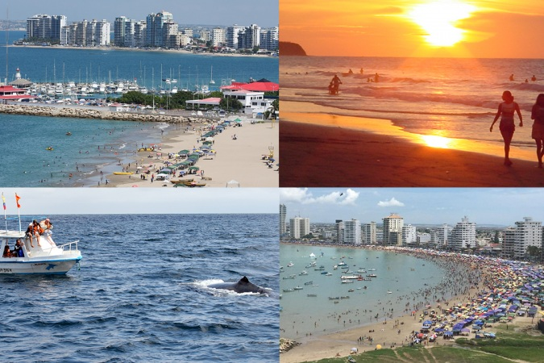

VISITA LA COSTA ECUATORIANA
Descubre cuales son los mejores destinos de la costa ecuatoriana. La mayoría de los principales destinos turísticos tienen buenas rutas de conducción. Disfrute de hermosas playas y aguas turquesas que bordean sus orillas. Aquí, las posibilidades de aventura son infinitas.
SUS LUGARES MAS EMBLEMATICOS SON:
SANTA ELENA
Santa Elena es una ciudad costera en Ecuador, capital de la provincia del mismo nombre. Los principales atractivos de Santa Elena son sus playas. Una de las principales cosas que hacer o destinos que recorrer seuir la "Ruta del Spondylus" — anteriormente conocida como "Ruta del Sol". — La ruta de Spondylus es una hermosa ...
2020 All Rights Reserved. Design by Free html Templates Distributed by ThemeWagon